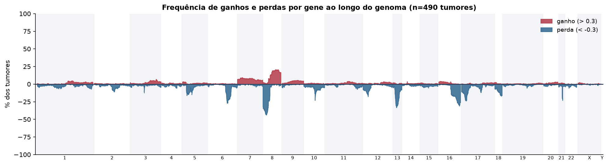
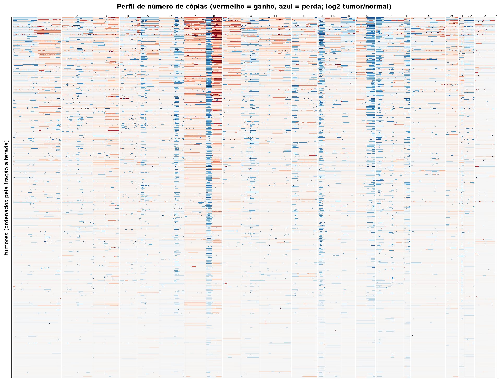
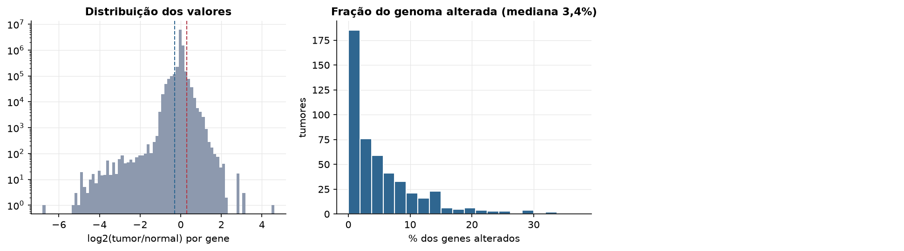
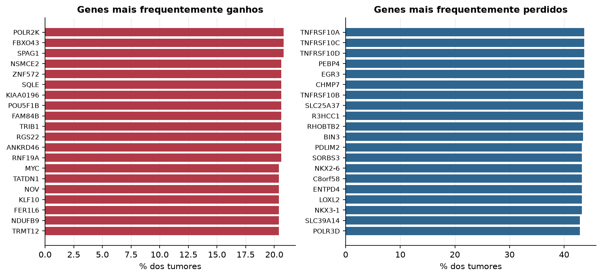

PRAD · Número de cópias (CNV)
Affymetrix SNP6, segmentos whitelisted do PanCanAtlas · gerado em 22/10/2026 03:08
490tumores
17.738genes
3,4%fração alterada mediana
114segmentos/tumor (mediana)
Fonte: SNP6 whitelisted (PanCanAtlas); nível de gene calculado dos segmentos (hg19)
O valor por gene é o do segmento que cobre o meio do gene (log2 tumor/normal, hg19). Sem correção de pureza e ploidia: tumores com pouca célula tumoral têm valores atenuados. Para chamadas discretas (−2 a 2), use o GISTIC2 do PanCanAtlas ou o ABSOLUTE.
Principais resultados
- Mediana de 3,4% dos genes com ganho ou perda por tumor (limiares log2 de 0.3 e -0.3).
- O cromossomo com mais ganhos em média é o 8 (11,5% dos tumores por gene) e o com mais perdas é o 13 (16,2%).
- Genes mais ganhos: POLR2K (21%), FBXO43 (21%), SPAG1 (21%), NSMCE2 (21%), ZNF572 (21%), SQLE (21%). Genes mais perdidos: TNFRSF10A (44%), TNFRSF10C (44%), TNFRSF10D (44%), PEBP4 (44%), EGR3 (44%), CHMP7 (43%).
Paisagem ao longo do genoma


Carga de alterações

Genes recorrentes

Top 25 genes por frequência de ganho
| gene | chrom | % ganho | % perda | média log2 |
|---|---|---|---|---|
| POLR2K | 8 | 20.8 | 0.2 | 0.162 |
| FBXO43 | 8 | 20.8 | 0.2 | 0.162 |
| SPAG1 | 8 | 20.8 | 0.2 | 0.162 |
| NSMCE2 | 8 | 20.6 | 0.2 | 0.16 |
| ZNF572 | 8 | 20.6 | 0.2 | 0.158 |
| SQLE | 8 | 20.6 | 0.2 | 0.158 |
| KIAA0196 | 8 | 20.6 | 0.2 | 0.158 |
| POU5F1B | 8 | 20.6 | 0.4 | 0.163 |
| FAM84B | 8 | 20.6 | 0.6 | 0.157 |
| TRIB1 | 8 | 20.6 | 0.2 | 0.159 |
| RGS22 | 8 | 20.6 | 0.2 | 0.161 |
| ANKRD46 | 8 | 20.6 | 0.2 | 0.162 |
| RNF19A | 8 | 20.6 | 0.2 | 0.161 |
| MYC | 8 | 20.4 | 0 | 0.163 |
| TATDN1 | 8 | 20.4 | 0.2 | 0.156 |
| NOV | 8 | 20.4 | 0.4 | 0.152 |
| KLF10 | 8 | 20.4 | 0.4 | 0.156 |
| FER1L6 | 8 | 20.4 | 0.2 | 0.157 |
| NDUFB9 | 8 | 20.4 | 0.2 | 0.156 |
| TRMT12 | 8 | 20.4 | 0.2 | 0.157 |
| TMEM65 | 8 | 20.4 | 0.2 | 0.157 |
| COLEC10 | 8 | 20.4 | 0.4 | 0.154 |
| MTSS1 | 8 | 20.4 | 0.2 | 0.156 |
| CTHRC1 | 8 | 20.4 | 0.4 | 0.156 |
| COX6C | 8 | 20.4 | 0.2 | 0.16 |
Top 25 genes por frequência de perda
| gene | chrom | % ganho | % perda | média log2 |
|---|---|---|---|---|
| TNFRSF10A | 8 | 0.8 | 43.7 | -0.276 |
| TNFRSF10C | 8 | 0.8 | 43.7 | -0.281 |
| TNFRSF10D | 8 | 0.8 | 43.7 | -0.276 |
| PEBP4 | 8 | 1 | 43.7 | -0.276 |
| EGR3 | 8 | 1 | 43.7 | -0.276 |
| CHMP7 | 8 | 0.8 | 43.5 | -0.276 |
| TNFRSF10B | 8 | 0.8 | 43.5 | -0.277 |
| SLC25A37 | 8 | 0.8 | 43.5 | -0.274 |
| R3HCC1 | 8 | 0.8 | 43.5 | -0.276 |
| RHOBTB2 | 8 | 0.8 | 43.5 | -0.277 |
| BIN3 | 8 | 1 | 43.5 | -0.275 |
| PDLIM2 | 8 | 1 | 43.3 | -0.273 |
| SORBS3 | 8 | 1 | 43.3 | -0.276 |
| NKX2-6 | 8 | 0.8 | 43.3 | -0.274 |
| C8orf58 | 8 | 1 | 43.3 | -0.273 |
| ENTPD4 | 8 | 0.8 | 43.3 | -0.274 |
| LOXL2 | 8 | 0.8 | 43.3 | -0.274 |
| NKX3-1 | 8 | 0.8 | 43.3 | -0.274 |
| SLC39A14 | 8 | 1 | 42.9 | -0.271 |
| POLR3D | 8 | 1 | 42.9 | -0.27 |
| PIWIL2 | 8 | 1 | 42.9 | -0.27 |
| PHYHIP | 8 | 1 | 42.9 | -0.27 |
| PPP3CC | 8 | 1 | 42.9 | -0.271 |
| BMP1 | 8 | 1 | 42.7 | -0.27 |
| ADAM28 | 8 | 1 | 42.7 | -0.268 |